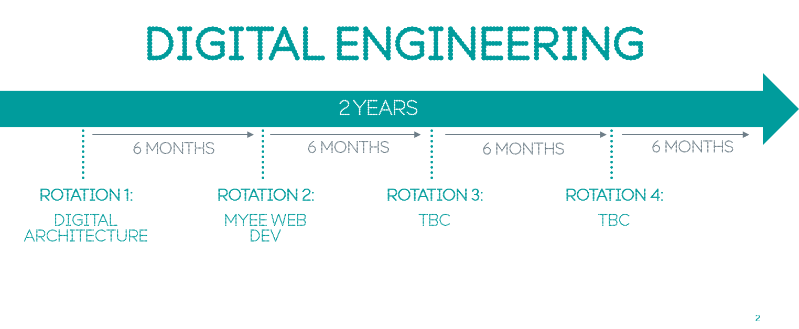

Hi, I'm Pauline.
People also call me Powerhouse.
To summarise, I am a...
People also call me Powerhouse.
To summarise, I am a...
My coding journey started from a hobby of creating websites for fun when I was 8 years old, and now I continue to bring my ideas to life by playing around with pixels on the internet.
Languages that I'm familiar with are HTML, CSS, Javascript, PHP, R and Python. I'm currently learning Java.
I have knowledge and experience with Wordpress, cPanel, MailChimp, sendinblue and dotmailer.
PREVIOUS WORK
 Pawlean
Pawlean Inspiration EU
Inspiration EU "You're Purple"
"You're Purple" White Rose DTP
White Rose DTP Green Impact
Green Impact #GivaLiva
#GivaLiva Chromaffin Cell Biology
Chromaffin Cell Biology #StopTheStigma
#StopTheStigma #ShefCodeFirst_Tweets
#ShefCodeFirst_Tweets 25 Days of GIPHY
25 Days of GIPHYIn September 2018, I joined BT's exciting Graduate Scheme working in the EE Digital Engineering team. Lasting 2 years, this development programme allows four 6-month rotations across the different delivery teams in EE.
My first rotation was in Digital Architecture which focuses on early digital engagement, impact assessments and a high-level overview of all the systems and how they interact. Whilst this rotation is more towards the business side, I am now in my second rotation which is closer to technology and coding. The vast variety and endless opportunity to learn different things in each team is what makes this programme fantastic!
Read about the start of my Graduate Development here. You can also follow along my journey at BT here.
PROJECTS
 Campus Champions
Campus Champions Gradventure
GradventureFor 2 years, I've proudly assisted in organising and delivering all-female coding community courses with Code First: Girls at the University of Sheffield. With inclusion and diversity at the core of my community work, I pioneered the first Women in Tech student community in Sheffield. I'm a passionate advocate for Women and People of Colour in STEM, actively working in communities to help create a better environment for future engineers!
I had also taken a leading role in the interdisciplinary group, MedTech Sheffield, as Tech Lead, Chief of Operations and organiser for HackMed. MedTech aims to bring individuals from medicine, healthcare and tech together through events, workshops and hackathons!
COMMUNITY PROJECTS
 Amali winner's speech - Computer Weekly
Amali winner's speech - Computer Weekly  Online community engagement
Online community engagement Bold For Change x #shefcodefirst
Bold For Change x #shefcodefirst Code First: Girls Blogs on Pawlean
Code First: Girls Blogs on Pawlean HackMed communications
HackMed communicationsI love bringing communities and people together:
‣ Collaboration with HackSheffield to take over 20 CFG students to the InspireWIT conference.
‣ Introducing CFG students to the hackathon scene
and the wider Women in Tech community.
‣ Efforts in organising #HackMed18 saw an increase in attendance of women (47%) and students from different backgrounds including Humanities, Finance and Arts.
‣ For International Women's Day 2019, I organised an event at the BT office in Leeds with local Yorkshire speakers in the tech community which was shared and highlighted by BT Consumer's CEO, Marc Allera.
13 years ago, I started writing on the web.
My blog has evolved over time, I now write about reflections of my experiences for both my self development journey (personal and professional growth) as well as daily adventures in life.

Drawing by Teecaake and logo by Matt Burman to represent Pawlean online
Examples of the topics I cover include monthly reflections, equality in STEM, well-being, and communicating science simply. A full list of topics can be found here.
Working on my blog has allowed me to develop:
‣ An understanding how to effectively communicate on different digital channels.
‣ An understanding on SEO to drive more leads.
‣ The ability to analyse data from Google Analytics to identify trends to maximise the performance of content. My blog gets an average of 1,500 vistors per month.
‣ Relationships by collaborating with brands, individuals and companies on projects that align with my values.
PROJECTS
 Inspiring Figures
Inspiring FiguresI have also started branching out into YouTube and have worked with different people on communicating messages across to my auidence. Across social media, I have a reach of approximately 9,000 people around the world.
In 2017, I started speaking at events to help inspire others to reach for the stars in their career and beyond. Previous talks I've given in the past include my story into STEM, the importance of community, diversity and inclusion and communicating well online for impact.
...at the University of Sheffield where I obtained an undergraduate degree in BSc (Hons) Biomedical Sciences with Employment Experience.
After my second year, I secured a placement year at the University of Sheffield in a Communications and External Engagement role. Although the placement was not a typical one to be taken by BMS students, I learnt a lot from the year. My contribution over the year, led me to be selected as a Finalist for "Best Intern" at the National Employability Awards 2018.
Inspired by my placement, I always encourage students to not let their degree restrict them to what they can do and look beyond the box.
VIDEO PROJECTS
 Pressing For Progress
Pressing For Progress MLH Hackathons
MLH Hackathons SU Tour
SU Tour Why take a placement?
Why take a placement? Why vlog?
Why vlog?CURRENT
PREVIOUS
 "Above and Beyond" category, Student Employee of the Year
"Above and Beyond" category, Student Employee of the Year Nomination for "One to Watch" and "Person with Purpose", #NPWAwards
Nomination for "One to Watch" and "Person with Purpose", #NPWAwards Won 3 Bronze, Gold and Environmental Hero of the Year, Green Impact.
Won 3 Bronze, Gold and Environmental Hero of the Year, Green Impact. Top 25, under 30 in technology and entrepreneurship, OTW.
Top 25, under 30 in technology and entrepreneurship, OTW. 5th most influential female student in the UK, Future 100.
5th most influential female student in the UK, Future 100. Final 5 for Technology, Nova Prize
Final 5 for Technology, Nova Prize Future List, #NPWAwards
Future List, #NPWAwards Best Intern, #NUEAwards
Best Intern, #NUEAwardsThanks to YOU @paulienuh for inspiring me every time I checkout twitter. You're an absolute power house & role model to many! 💎🎉
— Charlotte Fereday (@CharlotteBRF) June 3, 2017
Making a name for herself everywhere she goes, by working hard and overdelivering, always. 👌
— Matt Burman @ 🇬🇧 (@_mattburman) July 24, 2017
You are a force of nature @paulienuh! Unbelievable work this year. https://t.co/1ob0puN8IE
— UoS Placements (@UoSPlacements) August 11, 2017
One of the most inspiring action takers to follow 👇🏼👇🏼 https://t.co/wTNiiW4z8m
— Cam Adair (@camerondare) October 9, 2017
@paulienuh is epitome of awesome sauce. #rolemodel
— Tanja Lichtensteiger (@grappleshark) July 10, 2017
Personal Brand > Resume
— Alexander J.A Cortes (@AJA_Cortes) May 27, 2018
-Even if you don’t intend to work for yourself, you should still view yourself as a brand and build yourself accordingly
I’d encourage all young people to do this @paulienuh is the absolute best I’ve seen, hands down
Having had the pleasure to work with the firecracker that is @paulienuh, I can safely say she is hurricane waiting to happen to the tech industry #pawleanforpresident. Watch this one, she will blow you away. https://t.co/aKy3IZDwJp
— Bryony Olney (@bryonyolney) April 9, 2018
Good stuff! You will go far in the industry if you keep all this up
— Jon Church 🍕 (@jonchurch) September 30, 2017
Some never find courage to be so open, but it makes all the diff 💯👏👍
I'm always looking to expand my network and connect with like-minded people. Let's connect!
I'm available for contract work - I can help you develop your website, improve digital communications, and manage and grow your social media. I can also help out at your community events as a speaker or volunteer!
If you think we can work together or want to just have a chat,
you can get in touch with me below:
Email | @paulienuh | pnarvas
Find out more: